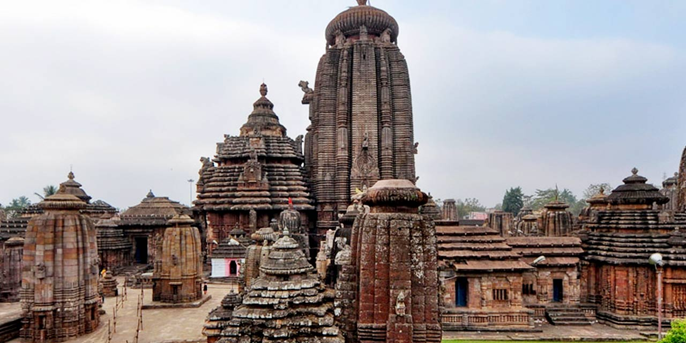
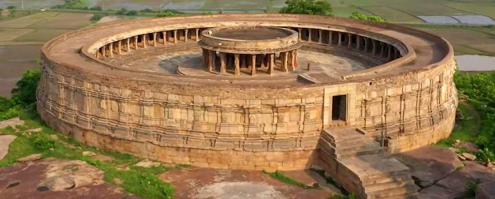

Temples and piligrimages in Odisha
Puri Tagannath Temple

The Puri Jagannath Temple, located in Odisha, India, is a 12th-century shrine dedicated to Lord Jagannath (a form of Krishna), Balabhadra, and Subhadra. As one of the four sacred Char Dham pilgrimage sites, it is famous for its annual Rath Yatra, the world's largest car festival. The temple is known for its unique wooden idols, massive kitchen, and many unexplained mysteries, such as its shadowless design.
- Key Tourist Information
- Location: Grand Road, Puri, Odisha, India.
- Darshan Timings: Generally 5:00 AM to 11:00 PM.
- Best Time to Visit: October to February (winter) is pleasant, while the Rath Yatra (June/July) offers a unique cultural experience.
- Entry Fee: Free.
- Important Restrictions: Only Hindu devotees are permitted to enter the temple premises. Non-Hindus can view the temple from the exterior, such as from the Raghunandan Library roof.
- Dress Code: Visitors should wear traditional or conservative clothing.
- Prohibited Items: Cameras, mobile phones, leather items (belts, bags), and shoes are not allowed inside.
- Security & Facilities: Lockers are available for depositing personal belongings, and a massive police presence is present to manage crowd control.
- Official website link here.
Sun Konark Temple
The Konark Sun Temple in Odisha, India, is a 13th-century UNESCO World Heritage Site dedicated to the Sun God, Surya. Built by King Narasimhadeva I around 1243–1255 A.D., this architectural masterpiece is designed as a massive chariot with 24 intricate wheels and seven horses, symbolizing the sun's passage of time.
- Key Tourist Information
- Location: Konark, Puri district, Odisha, India.
- Best Time to Visit: Morning hours (6 AM–8 AM) to avoid heat and witness sunlight on the, carvings.
- Visiting Hours: 6:00 AM to 8:00 PM daily.
- Entry Fee: ₹40 (Indians), ₹600 (Foreigners), Free for children under 15.
- Travel Duration: Allow 2–3 hours to explore the site.
- Key Event: The famous Konark Dance Festival takes place annually in December.
- Click here for more information.
- How to reach there:
- Nearest Airport: Bhubaneswar (Biju Patnaik International Airport) - 65 km away.
- Nearest Railway Station: Puri Railway Station - 35 km away.
- Road Connectivity: Well-connected by road, particularly the scenic Marine Drive road from Puri.
- Top Attractions in & Around Konark
- The Sun Temple Structure: Famous for its 24 wheels and 7 horses, with detailed carvings on the walls.
- Chandrabhaga Beach: Located close to the temple, offering peaceful, sandy, shores.
- Konark Archaeological Museum: Houses artifacts found during excavations.
- Ramachandi Temple: Located nearby at the confluence of the Kushabhadra River.
- Kuruma: A nearby Buddhist site (8th-9th century AD).
Lingraj Temple Bhubaneshvar

The Lingaraj Temple is a 11th-century Hindu temple in Bhubaneswar, Odisha, dedicated to Lord Shiva (as Harihara). It is the largest temple in the city, rising 180 ft (55 m) tall, and is a premier example of Kalinga architecture. The temple features a self-manifested Swayambhu Linga and is accessible only to Hindus.
- Key Tourist Information:
- Location: Old Town, Bhubaneswar, Odisha.
- Best Time to Visit: October to March (cooler weather).
- Timings: 6:00 AM – 9:00 PM (open daily).
- Entry Fee: Free.
- Time Needed: Approximately 1–2 hours.
- Festivals: Shivaratri (February/March) and Ashokastami (April) are major, highly crowded festivals.
- Click here for more information.
- How to Reach:
- By Air: Biju Patnaik International Airport is nearby.
- By Rail: Bhubaneswar Railway Station is 4–5 km away.
- By Road: Taxis and auto-rickshaws are easily available within the city to reach the Old Town.
Chausath (64) Yogini Temple

The 64 Yogini Temple (Chausathi Yogini Temple) in Hirapur, near Bhubaneswar, Odisha, is a 9th-century tantric shrine built by the Bhauma-Kara dynasty. It is a rare, roofless (hypaethral) circular temple showcasing 64 intricate Yogini idols, symbolizing the divine feminine energy and Durga's forms.
- Tourist Information & Best Time to Visit:
- Timing: October to March is the best time for weather.
- Daily hours are generally sunrise to sunset, with early morning/evening recommended for photography and to avoid heat.
- Click here for more information.
- Location Access:
- Mitaoli: ~40 km from Gwalior; best reached via taxi.
- Hirapur: ~20 km from Bhubaneswar.
- Bhedaghat: ~20 km from Jabalpur.
- Duration: 1–2 hours per site is sufficient.
- Tips: Wear comfortable shoes for climbing (especially in Mitaoli and Bhedaghat) and respect that some temples are maintained by the ASI (Archaeological Survey of India) with limited services